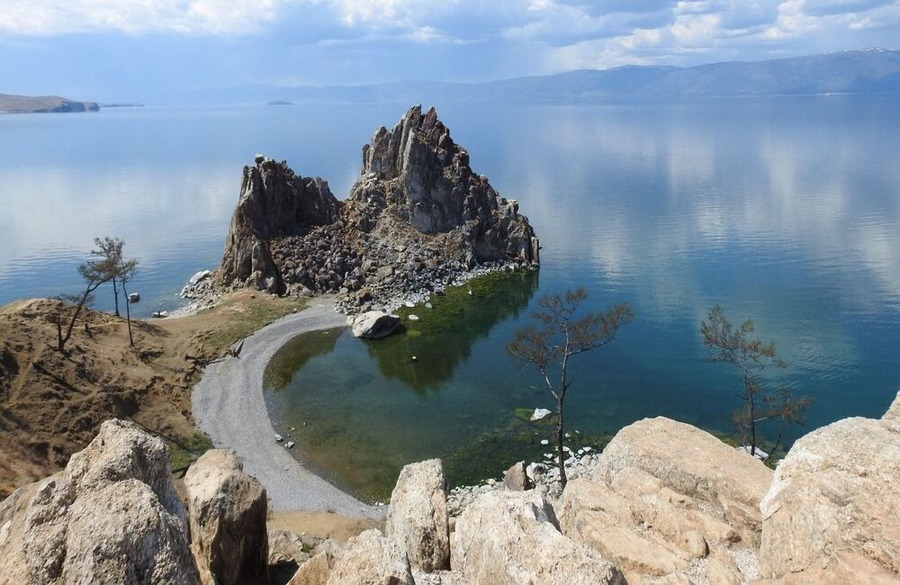
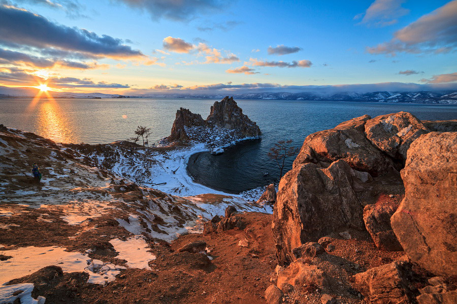
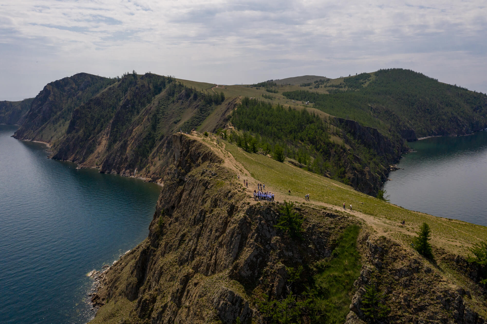
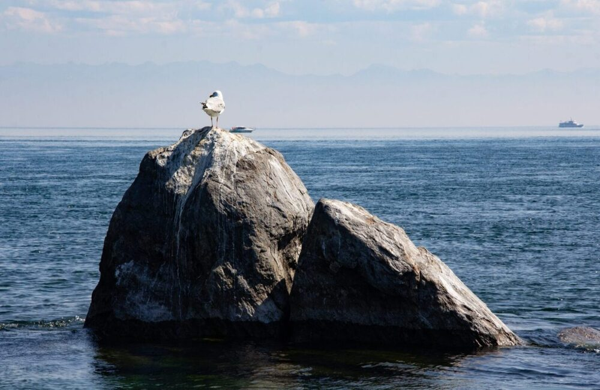
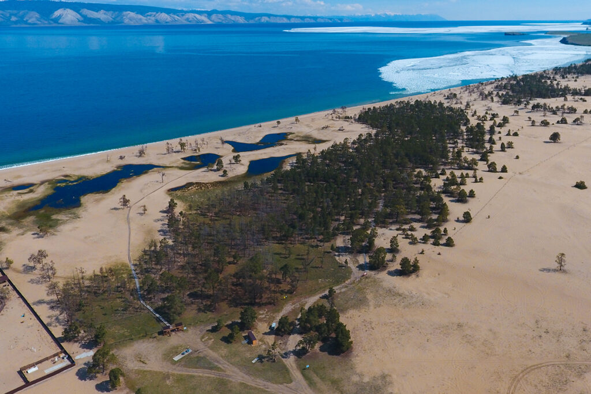

Крупнейший остров Байкала с уникальной природой, скалами, пляжами и бурятской культурой





Ольхон — крупнейший остров на Байкале, известный своими скалами, степями и священными местами. Это одно из самых атмосферных мест всего региона.
1–3 дня
Май – Сентябрь
3 000 – 12 000 ₽